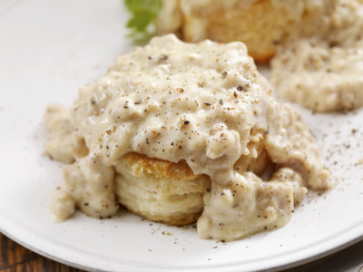

Odin Recipes
Huginn and Muninn

It is actually just biscuits and gravy, but it's damn good!
This basic biscuits and gravy recipe is bringing you the message of a tasty, hearty breakfast classic.
Ingredients:
Huginn(Biscuits)-
- 1/2 cup shortening
- 2 cups all purpose flour
- 1 tablespoon sugar
- 3 teaspoons baking powder
- 1 teaspoon salt
- 3/4 cup milk
Muninn(Gravy)-
- 4oz breakfast sausage
- 2 tablespoon minced onion
- 1 tablespoons butter
- 1 cup milk
- 1.5 to 2 tablespoons corn starch
- salt to taste
- 1/4 teaspoon ground pepper
- 1/4 teaspoon dry oregano
Preparation:
Huginn(Biscuits)-
- Preheat oven to 150F
- In a medium large bowl, cut shortening into dry ingredients until consistency of fine crumb
- Stir in milk until dough separates from wall of bowl
- On a lightly floured surface, lightly knead dough 10 times
- Roll or form by hand into 1/2 inch thick sheet
- Cut with floured round cutter 2 to 2-1/2 inch diameter
- Place on ungreased cookie sheet about 1 inch apart
- Bake 10 to 12 minutes
- Immediately remove from cookie sheet
Muninn(Gravy)-
While biscuits are cooking:
- In small sauce pan over medium heat sautee onions in butter
- When onions are translucent add crumbled breakfast sausage
- Add pepper and dried oregano then cook until sausage is done through and is browned to taste
- When sausage is done, add milk and bring up to simmer over low heat
- While milk is coming to simmer, in a small glass measuring cup combine corn starch with cold to make slurry
- Slowly add slurry to simmering gravy while constantly stirring until desired thickness is attained. Gravy will thicken some after cooling.
- Add salt to taste
Final Prep:
Place 2 biscuits on a plate and smother in gravy as desired. Serve alongside eggs and hash browns with a cup of coffee for a roadside diner classic!
Odin Recipes